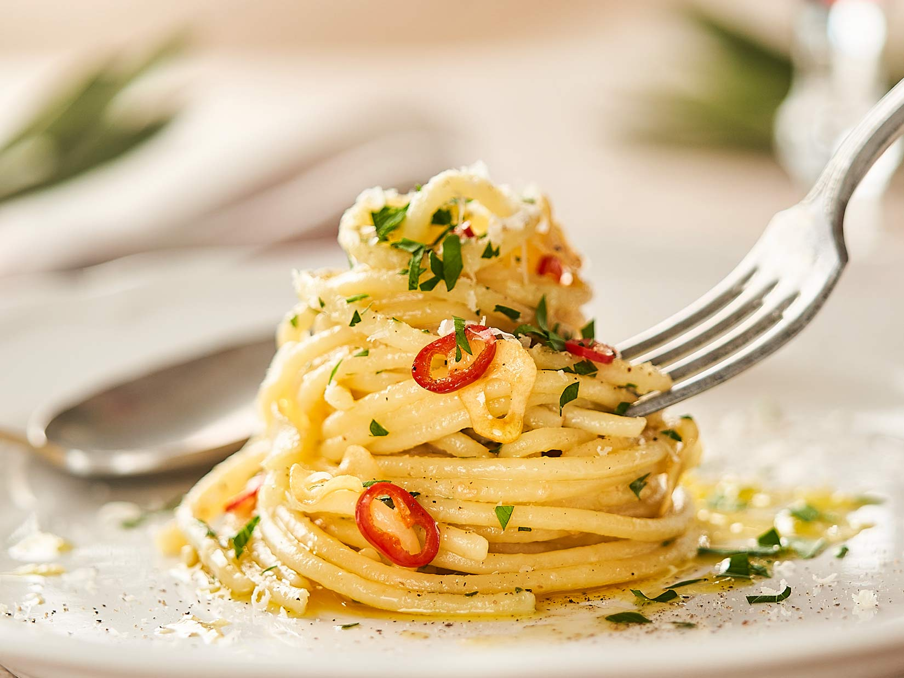

Aglio E Olio

Description
No two aglio e olio recipes are alike, but this one is pretty true to the classic method.
The key is slowly toasting the garlic slices to a perfect golden brown in the olive oil.
If it's too light, you don't get the full flavor and if it's too dark it gets bitter.
Ingredients
- 1 pound uncooked spaghetti
- 1/2 cup olive oil
- 6 cloves garlic
- 1/4 teaspoon red pepper flakes(or to taste)
- salt and freshly ground pepper
- 1/4 cup chopped parsley
- 1 cup finely grated Parmigiano-Reggiano
Steps
-
Bring a large pot of lightly salted water to a boil. Cook spaghetti in the boiling water,
stirring occasionally until cooked through but firm to the bite, about 10 to 12 minutes.
Drain and transfer to a pasta bowl.
-
While the pasta is cooking, combine olive oil and garlic in a cold skillet.
Cook over medium heat to slowly toast garlic, about 10 minutes. Reduce heat to medium-low when olive oil begins to bubble.
Cook and stir until garlic is golden brown, about another 5 minutes. Remove from heat.
-
Stir red pepper flakes, salt, and black pepper into pasta. Pour in hot olive oil and garlic,
and sprinkle on Italian parsley and half of the Parmigiano-Reggiano cheese; toss until combined.
-
Serve pasta topped with the remaining Parmigiano-Reggiano cheese.